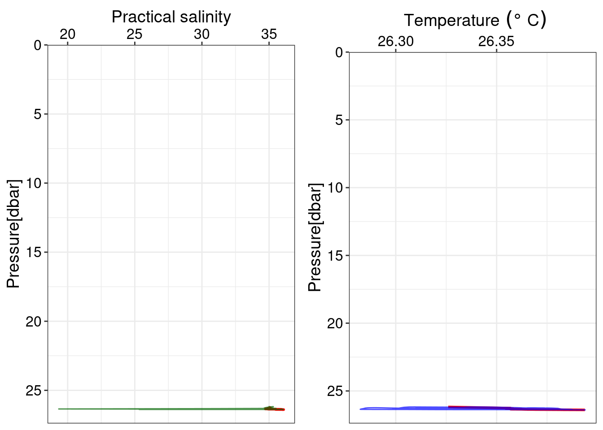
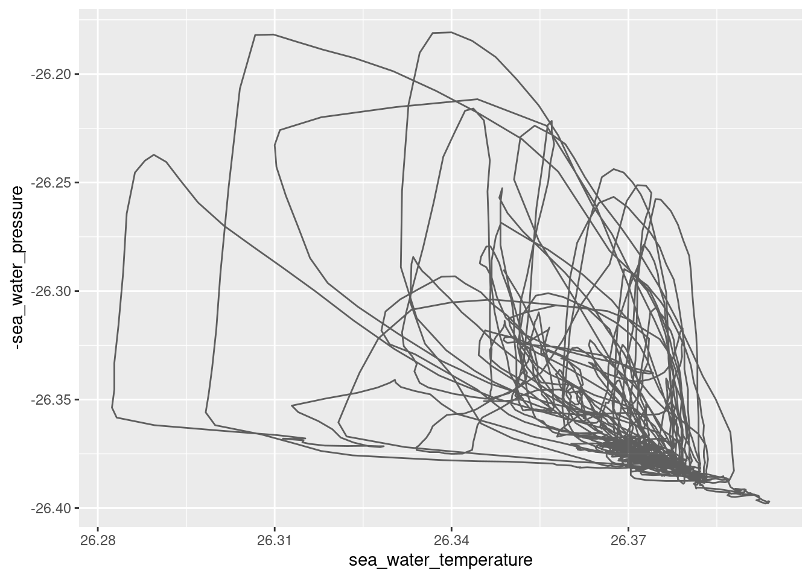

setup
if (!nzchar(system.file(package = "librarian"))) {
install.packages("librarian")
}
librarian::shelf(
quiet = TRUE,
readr, here, glue, "jiho/castr", dplyr
)Mostafa & Tylar
April 3, 2024
TODO: upate to use OCE package & code from https://github.com/Mostafaawada/Dissertation_code/blob/main/analysis/cast_cleanup.qmd
source(here("R/ctd_plotting.R"))
salinity <-
ctd_plotting(
ctd_station_df,
sea_water_pressure,
sea_water_salinity,
xlab = "Practical salinity",
.color = "darkgreen"
)
# temperature
temp <-
ctd_plotting(
ctd_station_df,
sea_water_pressure,
sea_water_temperature,
xlab = expression(~Temperature ~ (degree ~ C))
)
# combine salinity and temperature
combined_plot <- cowplot::plot_grid(salinity, temp, nrow = 1)`geom_smooth()` using formula = 'y ~ x'
`geom_smooth()` using formula = 'y ~ x'
